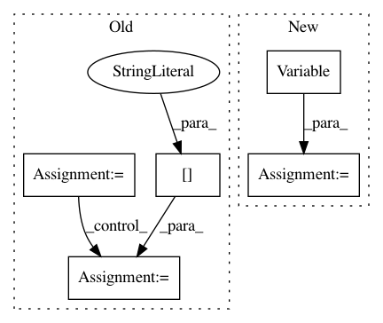

a4b1242ba2567d02950e0a106d0fa4d6707389d8,niftynet/application/gan_application.py,GANApplication,connect_data_and_network,#GANApplication#Any#Any#,191
Before Change
with tf.name_scope("Optimizer"):
self.optimizer = tf.train.AdamOptimizer(
learning_rate=self._param.lr)
is_training = training_grads_collector is not None
if is_training:
// a new pop_batch_op for each gpu tower
device_id = training_grads_collector.current_tower_id
data_dict = self._sampler.pop_batch_op(device_id)
noise = data_dict["Sampling/noise"]
images = data_dict["Sampling/images"]
conditioning = data_dict.get("Sampling/conditioning", None)
net_output = self._net(noise, images, conditioning, is_training)
After Change
images = data_dict["image"]
noise_shape = [self.net_param.batch_size,
self.gan_param.noise_size]
noise = tf.Variable(tf.random_normal(shape=noise_shape,
mean=0.0,
stddev=1.0,
dtype=tf.float32))
tf.stop_gradient(noise)
conditioning = None
net_output = self._net(noise,
In pattern: SUPERPATTERN
Frequency: 3
Non-data size: 5
Instances
Project Name: NifTK/NiftyNet
Commit Name: a4b1242ba2567d02950e0a106d0fa4d6707389d8
Time: 2017-08-11
Author: wenqi.li@ucl.ac.uk
File Name: niftynet/application/gan_application.py
Class Name: GANApplication
Method Name: connect_data_and_network
Project Name: OpenNMT/OpenNMT-py
Commit Name: b87368e1e7fd832b505db9cc08015ac7af8f95de
Time: 2016-12-23
Author: jvanamersfoort@twitter.com
File Name: VAE/main.py
Class Name:
Method Name: train
Project Name: OpenNMT/OpenNMT-py
Commit Name: b87368e1e7fd832b505db9cc08015ac7af8f95de
Time: 2016-12-23
Author: jvanamersfoort@twitter.com
File Name: VAE/main.py
Class Name:
Method Name: test